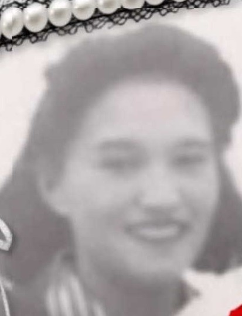

Eric Alexis Carlson.

Född 17 jul 1905 i LItchville, North Dakota, USA 3 .
Död 16 okt 1992 i High Prairie, Alberta, Kanada 4 .
|
Född
4 feb 1921
i Grouard, Alberta, Kanada
1
.
Död 31 dec 2002 i Alberta, Kanada 1 . |
 |
|
Marie Anne Marguerite Beauchamps
Född 4 feb 1921 i Grouard, Alberta, Kanada 1 . Död 31 dec 2002 i Alberta, Kanada 1 . |
|||
|
Gift
21 jan 1942
i High Prairie, Alberta, Kanada
2
.
Eric Alexis Carlson.
Född 17 jul 1905 i LItchville, North Dakota, USA 3 . Död 16 okt 1992 i High Prairie, Alberta, Kanada 4 . |
Framställd 12 aug 2026 med hjälp av Disgen version 2025.